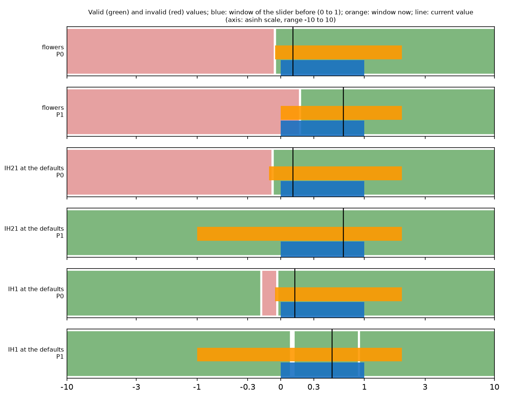
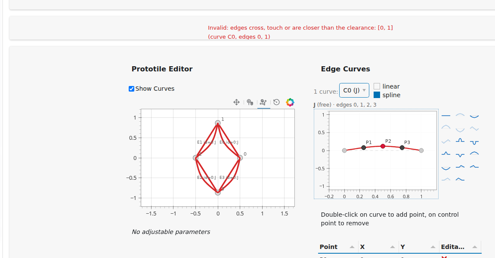
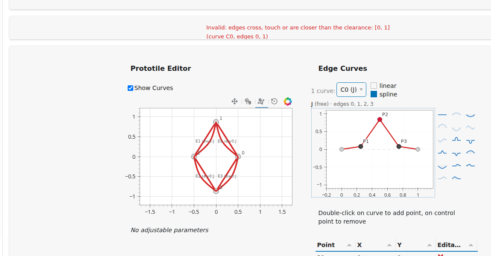
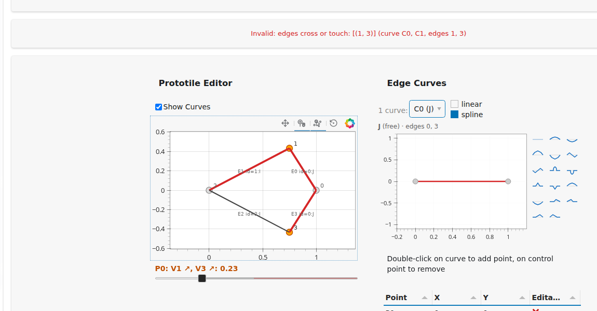
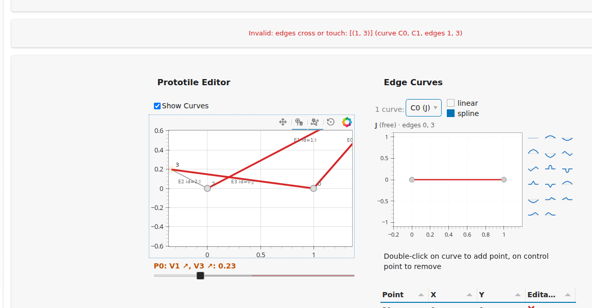
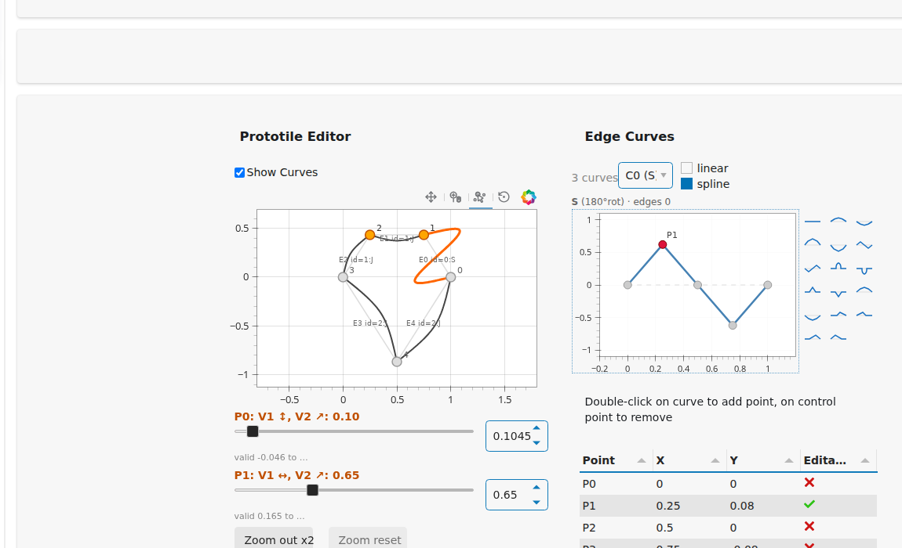
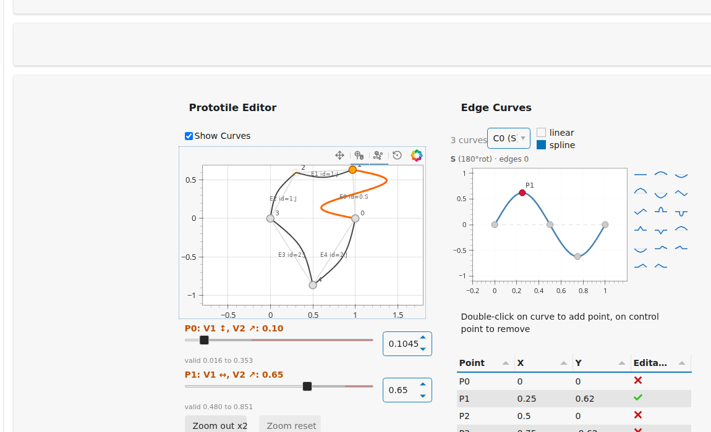
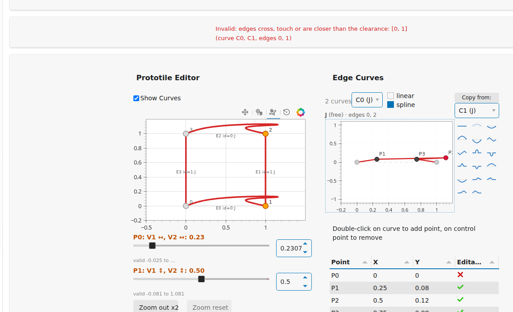
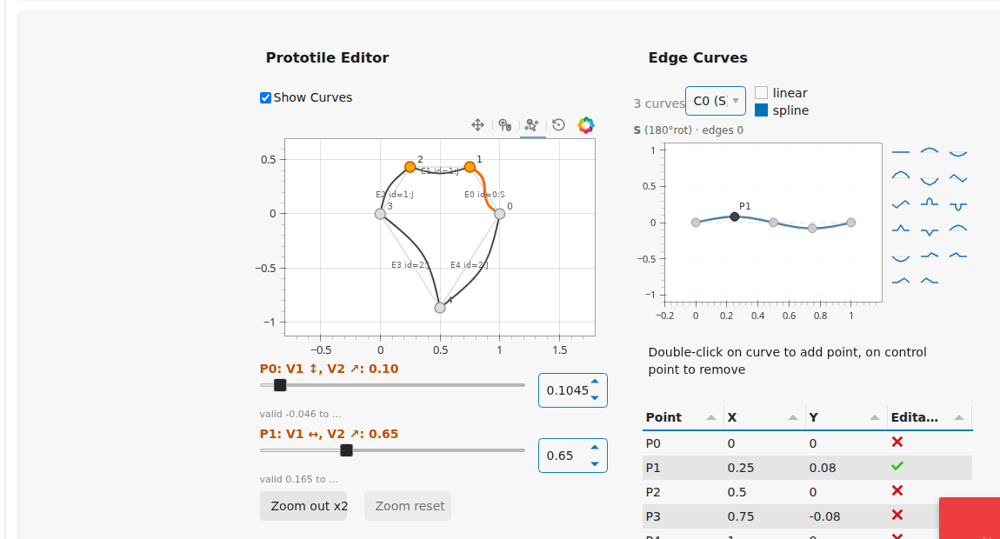

A throttled probe shows an invalid prototile in red while a node or vertex is dragged, an invalid release is reverted with a message naming the curve and edges, and the sliders are limited to the valid interval.
PR 3 of the plan of proposal-isotile-gui, sections 3.2 and 3.4, as approved: revert on release (no slide to the boundary), red display of the offending edges in both editors, red held for 1.5 s after a revert, slider limits.
The port already refused an invalid edit at the release (EditorModel.commit returns the report, TilingState._commit notifies and redraws from the previous draft) and EditorModel.probe existed. Added:
| Part | Behavior |
|---|---|
components/probe.py | ProbeChannel: the pan handlers call window._isoProbeSend; at most 8 payloads per second go to Python, one in flight, newer payloads replace the waiting one (intermediate positions are dropped); Python answers by writing a second source, which releases the next payload; a lost answer is given up after 1 s; the pending payload is dropped at the end of a drag; round trips are kept in window._isoProbeLog |
state.py | probe(draft), probe_curve(shape_id, points) (symmetry enforced as at the release), probe_parameters, parameter_limits(); validity (Validity: bad edges, their shape ids, message) is what both editors and the status line show; a refused edit notifies the message with the curves and edges (Not applied (Move curve 0 control point): ... (curve C0, edges 0, 1)) and holds the display for 1.5 s (a Bokeh timeout; a newer display is not cleared by an older hold); a commit clears the display |
editor_model.slider_limits(draft, k) | the interval of valid values in 0 to 1 around the current value: 11 samples toward each end, bisection to 1e-3, check_prototile on the actual draft with its curves; cached per draft |
| curve editor | pan handler sends all points of the dragged curve; the curve is red while validity names the active curve |
| prototile editor | vertex pan handler sends the parameter changes it solves for; a second multi_line on the same edge source with a BooleanFilter draws the edges of the offending shape ids in red (so it follows the live JavaScript geometry), and the thick curves of those edges are red; the track of each slider is shaded red outside the valid interval; a slider value outside it is set back to the limit, for the events during the drag and for the committed value; the vertex drag clamps to 0 to 1 and shows red inside that range |
components/status_line.py | one line under the toolbar with Invalid: <message> (curve C0, edges 0, 1), empty (same height) when valid |
Design choices: the probe goes through Python so that the result agrees with check_prototile (no second implementation in JavaScript); the red overlay is a filtered view of the edge source, not a color column, because the vertex handler rewrites that source on every pan event; the limits are recomputed when the parameter panel is rebuilt (after every commit, undo, redo, reset and load), not when a slider is grabbed, because nothing else can change the draft between the grab and the release; a vertex drag is clamped to 0 to 1 only, as the proposal says, so that dragging into an invalid value is shown in red and refused at the release.
| Measurement | Result |
|---|---|
| browser round trip of a probe (send, Python check, answer), 21 probes during a 2.4 s drag of a curve node | median 52 ms, maximum 464 ms (the first probe of a page; the others at most 80 ms) |
Python part for a curve probe (enforce_symmetry, check_prototile) on IH36, 200 random nodes | median 4.4 ms, 95th percentile 7.6 ms, maximum 11.6 ms |
| Python part for a parameter probe on IH30 | median 0.2 ms |
slider_limits for the 6 parameters of IH4 (first call, not cached) | 22 ms |
The rate cap holds (21 probes in about 2.7 s). On the Hugging Face Space the round trip adds the network latency of the user; not measured.
| Test | What it checks |
|---|---|
tests/test_validity.py (25) | slider_limits within 0.006 of a fine sweep (step 0.004) for every parameter of 8 drafts: IH30, 4, 7, 12, 16, IH4 and IH12 with curves, IH30 at 0.4; the limit is valid and 0.01 beyond it invalid; the probe leaves draft, history and index unchanged; both copies of a shape id are named; the refused edit names curve and edges and holds the display; a superseded hold is not cleared; a commit clears; curve and prototile editors and the status line show it; the slider track and the clamp; the probe channel; 4 seeds of 120 random operations (parameters, node moves, presets, add and remove, modes, copy, undo, redo, reset, probes, loads) with every history entry re-checked by check_prototile |
tests/browser/ (6 new, 20 in all) | node dragged into an invalid position: red in both editors and the status line while held, reverted on release with nothing committed, toast naming C0 and edge, red held and cleared; red clears when the node is valid again while still pressed and the release then commits; vertex dragged to an invalid parameter: red, reverted, toast; vertex to a valid parameter: no red, commit; the slider dragged to the end stops at 0.487 and nothing is refused; probe round trips |
The red display was drawn on the straight polygon and the curve of a dragged node was not shown in the prototile editor until the release. Now:
| Part | Behavior |
|---|---|
| curved edges | the prototile editor draws the curved outline of every edge (one multi_line source with a color and width per edge); the straight polygon is a faint guide (#ddd) that carries the vertex handles; the red display colors the curved edges of all copies of the offending shape ids; with Show Curves off the straight edges are drawn as before, red included |
| curve node drag (curve editor) | the probe answer sets TilingState.live_outline: the dragged curve (interpolate, symmetry enforced) placed on every edge of its shape id with the edge transforms of the draft's tiling (edge_transforms, edge_reversed); the placement depends only on the vertices, so it exists for a curve that would make the prototile invalid; the prototile editor patches those edges; at 8 per second like the probe |
| vertex drag (prototile editor) | the JavaScript handler moves the curved edges with the vertices: each outline is stored as (s, t) relative to its chord, p = A + s (B - A) + t J (B - A), which is exact because every edge copy is a similarity image of the canonical curve (tested against with_parameters on four presets to 1e-5); no prediction is involved beyond the existing exact vertex positions |
| cost | placed_curve 0.3 ms, a full curve probe including the placement and the patch 2.1 ms median (2.8 ms maximum) on IH21; computing the local coordinates 0.25 ms per draft; the visible lag of the outline is the probe round trip, 52 ms median as before |
Finding for the flowers preset (IH21 with its three curves), every parameter swept over -10 to 10 in steps of 0.02 and over 40 log-spaced values out to 1e4 on each side (range.py):
| Parameter | Valid values | Slider before | Now |
|---|---|---|---|
| P0, moves V1 vertically and V2 diagonally (value 0.105) | from -0.046 upward, no upper limit | 0 to 1; the minimum below 0 and everything above 1 unreachable | window -0.05 to 2, track marks the limit, field takes any valid value |
| P1, moves V1 horizontally and V2 diagonally (value 0.65) | from 0.165 upward, no upper limit | 0 to 1; the minimum 0.165 not shown | window 0 to 2, the track is red below 0.165 |
TilingType.safe_ranges for IH21 at the defaults is (-0.065, inf) and (-inf, inf); with the flowers curves P1 has a minimum of 0.165, so it is not the interval of the actual draft. At the defaults without curves P1 of IH21 has no limit at all and P0 has the minimum -0.06 (grid) to -0.065 (safe_ranges).
Across the 55 types with parameters (128 parameters, all others at their defaults, no curves; range_all.py, range_all.json):
| Valid values around the default (a limit beyond 100 in absolute value counts as none) | Parameters |
|---|---|
| a minimum and no maximum (the tiling stays valid as the parameter grows, only the shape degenerates) | 58 |
| no limit on either side | 57 |
| a minimum and a maximum | 10 |
| a maximum and no minimum | 3 |
| the same counted strictly, a limit anywhere within -1e4 to 1e4 (56 / 31 / 38 / 3): 28 of the finite upper and 26 of the finite lower limits are far-out boundaries of an island (2894 to 8377) | |
| valid interval entirely inside 0 to 1 | 8 |
| a limit inside 0 to 1 that the old window cut | 28 |
| valid values above 1 / below 0 | 116 / 101 |
Of the 94 finite lower limits, 68 lie between -0.2 and 0.6 (median -0.02); of the 41 finite upper limits only 13 lie between 0.4 and 1.3, the others are far-out island boundaries. So the old window 0 to 1 hid valid values for 120 of 128 parameters, and a limit (a length that must stay positive, a vertex that must not cross an edge) was invisible when it lay outside 0 to 1; 58 parameters are valid from a minimum to infinity.
What is implemented (unambiguous):
| Part | Behavior |
|---|---|
editor_model.parameter_ranges(draft, zoom) | the valid interval around the current value searched in -2^zoom to 1 + 2^zoom (21 samples and bisection to 1e-3; wider if the value is outside), the window = 0 to 1 extended to that interval and rounded outward to 0.05, and whether an end is a limit or only the end of the search |
| slider | window start and end from the range; the track is shaded red outside the valid interval; the value cannot leave the interval |
| numeric field next to each slider | takes any value; valid values are applied (also outside 0 to 1), invalid ones are refused with the message naming the curve and edges; this also crosses an invalid stretch that the slider cannot |
| text under each slider | valid a to b; ... marks an end that is not a limit within the searched range |
| Zoom out x2, Zoom reset | the search range doubles (up to 16 beyond 0 to 1); reset on a new type |
| vertex drag | clamps to the same window per parameter (JavaScript, the release and the probe) |
Options for the unbounded sides, not implemented (for the user to choose): (A) the linear window as now with Zoom out; (B) an asinh scale for the slider (linear within about +-0.5, logarithmic beyond), so 0 to 1 keeps its resolution and 100 is reachable; (C) a window that is always 0 to 1 plus the field for everything else. Wanted: B needs a custom slider (a Bokeh slider is linear), about 60 lines of JavaScript, and makes the vertex drag and the slider use two scales; A and the field cost nothing more and cover the practical range.
| Test | What it checks |
|---|---|
tests/test_validity.py (+9) | placed_curve reproduces edge_outlines on five presets and exists for an invalid curve (both copies); the (s, t) coordinates reproduce the outlines of the moved prototile; the probe sends the dragged outline to the prototile editor and a commit clears it; red is on the curved edges of the shape id; windows reach beyond 1 for IH21 with curves, with hard minima verified 0.005 below and above; the field applies a valid value and refuses an invalid one; the vertex clamp uses the window |
tests/browser/ (+4, 24 in all) | curved edges follow a vertex drag live (ends equal the polygon vertices while the mouse is held) and after the release; they follow a node drag live (edge 0 moves, the other shape ids do not); red on the curved edges of every copy; a value typed beyond 1 is applied, one below the minimum is refused, Zoom out widens the window |

Valid (green) and invalid (red) values of six parameters on an asinh axis from -10 to 10; blue: the old slider window, orange: the window now, line: the current value. IH21 P1 at the defaults is valid everywhere; IH1 P1 has narrow invalid stretches at 0.1 and 0.9, so the slider (which stops at the first invalid value) cannot cross them while the numeric field can jump.

After the release: the node is back at its last valid position, the draft and the history are unchanged, the red display stays for 1.5 s, the notification names C0 and edges 0, 1.

A node of the curve of IH36 dragged up with the mouse held. The probe answered: the dragged curve is red in the curve editor, all four edges of shape id 0 are red in the prototile editor, and the status line shows the message with the curve and edges.

After the release: the vertex returned to the draft, nothing committed, red held.

IH30, a vertex dragged to a parameter value above 0.487 (the track of the slider is shaded red from there). Edges 1 and 3 are red, the status line shows the message.

IH21 (flowers), the node of the S curve dragged with the mouse held: edge 0 follows in the prototile editor while the straight polygon stays as a faint guide.

A vertex of the same prototile dragged: the curved edges stay attached to the vertices during the drag.

IH41, a node dragged to an invalid position: the curved edges of both shape ids are red, the dragged curve is red in the curve editor, the status line names the curves and edges. The sliders below show the new rows.

w_sliders.png